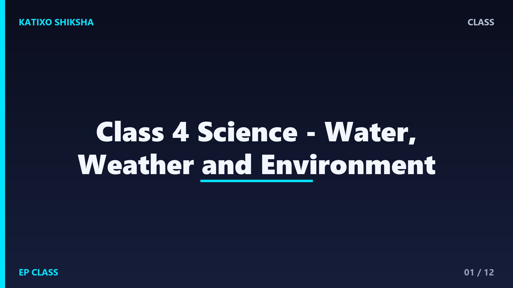

Class 4 Science - Water, Weather and Environment

Slide 1Water is needed by people, plants, and animals. We use water for drinking, cooking, cleaning, farming, and many other activities. Although Earth has a lot of water, clean drinking water is limited, so we must use it wisely.

Slide 2We get water from rain, rivers, lakes, ponds, wells, springs, and underground water. In cities, water may come through pipes after treatment. Natural sources must be kept clean and protected.

Slide 3Water is used at home, school, farms, hospitals, and factories. Plants need water to grow. Animals need water to live. Farmers need water for crops. Every day, our life depends on water in many ways.

Slide 4The water cycle shows how water moves. The Sun heats water and changes it into vapour. Vapour cools and forms clouds. Then rain brings water back to Earth. This process repeats again and again.

Slide 5Evaporation happens when liquid water changes into water vapour. Wet clothes dry because water evaporates. Puddles disappear after sunny weather because the Sun warms the water and changes it into vapour.

Slide 6Condensation happens when water vapour cools and becomes tiny water drops. These drops form clouds. When clouds become heavy, water falls as rain. Rain fills rivers, ponds, soil, and underground water.

Slide 7Weather tells us how the air is outside today. It may be sunny, cloudy, rainy, windy, hot, or cold. Weather can change quickly. We choose clothes, umbrellas, and outdoor plans based on weather.

Slide 8Seasons are longer weather patterns. Many places have summer, rainy season, winter, and spring-like changes. Seasons affect food, clothing, farming, festivals, and the activities people do.

Slide 9Air is all around us. We need clean air to breathe. Smoke, dust, and harmful gases make air dirty. Planting trees, reducing smoke, and using cleaner transport help protect air quality.

Slide 10Waste should not be thrown anywhere. Wet waste and dry waste can be separated. Paper, plastic, glass, and metal can often be reused or recycled. Reducing waste keeps surroundings clean.

Slide 11The environment includes air, water, soil, plants, animals, and people. We protect it by saving water, planting trees, avoiding litter, reusing materials, and respecting animals. Small actions matter when many people join.

Slide 12Let us revise. Name two water sources. What is evaporation? Why does rain happen? What is weather? How can we save water and protect air? These answers connect water, weather, and environment together.